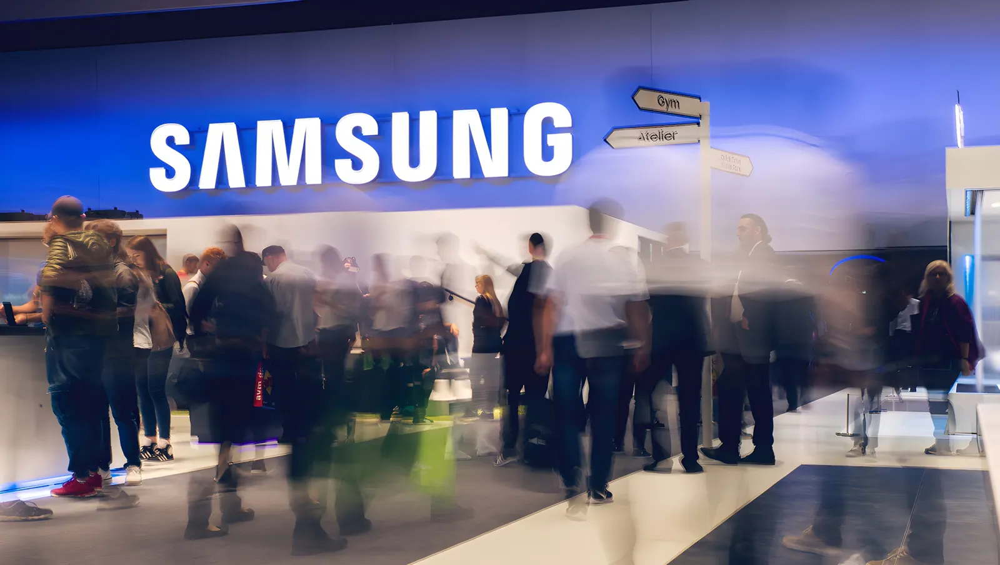

Mai 2026 : alors que Samsung Electronics venait d'annoncer un bénéfice net multiplié par six en un an grâce au boom de l'IA, ses salariés ont décidé de réclamer leur part. Après des mois de tensions, une menace de grève de 18 jours capable de paralyser la chaîne mondiale des semi-conducteurs, et une médiation au sommet de l'État, le géant sud-coréen a conclu un accord historique : près de 78 000 employés de sa division puces percevront en moyenne l'équivalent de 290 000 à 350 000 euros chacun. Un séisme social révélateur des nouvelles fractures du capitalisme de l'IA.
Au premier trimestre 2026, Samsung Electronics a publié des résultats sans précédent : un bénéfice net de 47 200 milliards de wons (plus de 27 milliards d'euros), soit une multiplication par six sur un an. La demande mondiale en puces mémoire à haute bande passante (HBM), utilisées dans les accélérateurs d'IA et les centres de données des grandes entreprises technologiques, a tiré l'ensemble du cycle des semi-conducteurs. Pour la première fois de son histoire, la capitalisation boursière de Samsung a franchi le seuil symbolique des 1 000 milliards de dollars au début mai 2026.
Dans ce contexte d'euphorie financière, les syndicats de Samsung Electronics ont choisi de passer à l'offensive. Depuis décembre 2025, ils réclamaient une hausse de salaire de base de 7 %, la suppression des plafonds sur les primes, et l'indexation d'une partie des bénéfices opérationnels sur la rémunération des salariés. Ils dénonçaient aussi l'écart croissant entre les employés de la division des puces, bénéficiant de primes généreuses, et ceux des autres départements — écrans, téléphonie, électronique grand public — dont les résultats stagnaient.
En mars 2026, 93 % des salariés votants s'étaient prononcés en faveur d'une grève, une proportion exceptionnelle pour une entreprise longtemps réputée pour sa politique hostile aux syndicats. Le mouvement s'est construit dans la durée : en mai, le syndicat SELU avait accepté la proposition d'un organisme officiel de médiation, mais la direction de Samsung avait rejeté cette offre, ouvrant la voie à un conflit ouvert. Une grève de 18 jours, du 21 mai au 7 juin, était officiellement programmée, mobilisant 50 500 salariés syndiqués.
La menace était sérieuse. Une paralysie des sites de Giheung, Hwaseong et Pyeongtaek — les trois grands pôles de production de puces de Samsung au sud de Séoul — aurait pu coûter jusqu'à 1 000 milliards de wons par jour à l'économie coréenne, selon des estimations, les pertes cumulées pouvant atteindre 66 milliards de dollars sur la durée du préavis. Un enjeu colossal pour un pays dont les semi-conducteurs représentent plus d'un tiers des exportations.
Les syndicats de Samsung lancent leurs premières revendications : hausse de salaire de 7 %, fin des plafonds de primes, indexation sur les bénéfices opérationnels.
Vote des salariés : 93 % en faveur d'une grève. Le résultat marque une rupture dans la culture sociale de Samsung, longtemps associée à une politique antisyndicale.
Échec des négociations : la direction rejette la proposition du médiateur officiel. Le syndicat SELU confirme le déclenchement d'une grève de 18 jours à partir du lendemain.
Le gouvernement coréen intervient : le ministre du Travail Kim Young-hoon prend personnellement en charge la médiation. De nouvelles discussions s'engagent en fin d'après-midi, en présence du ministre.
Samsung Electronics signe un accord salarial provisoire avec ses syndicats. La grève prévue de 18 jours aura finalement lieu, mais l'accord est soumis au vote des adhérents.
Vote électronique : 74 % des membres de deux syndicats (plus de 60 000 personnes) approuvent l'accord. La grève prend fin après 18 jours. L'accord entre en vigueur.
Le compromis conclu est structurellement inédit dans l'industrie coréenne des semi-conducteurs. Pour les 78 000 salariés de la division puces — sur 125 000 employés au total en Corée du Sud — l'accord prévoit le versement d'une prime annuelle équivalant à 10,5 % du bénéfice d'exploitation du département, versée sous forme d'actions, complétée par 1,5 % supplémentaire en numéraire. Sur la base des prévisions de bénéfice d'exploitation pour 2026, le montant moyen par salarié est estimé entre 290 000 et 350 000 euros selon les sources et les hypothèses retenues.
Pour les 28 000 salariés de la seule division des puces mémoire — le cœur du réacteur IA — les primes pourraient atteindre 600 millions de wons (environ 347 000 euros) si le bénéfice d'exploitation de Samsung dépasse les 300 000 milliards de wons (172 milliards d'euros) projetés. Les salaires de base seront par ailleurs augmentés en moyenne de 6,2 %. Samsung devient ainsi la deuxième entreprise mondiale connue pour avoir conclu un accord de partage des bénéfices lié explicitement à l'IA avec ses travailleurs.
« À partir de la conclusion de cet accord salarial, la direction et les représentants des salariés travailleront d'une seule voix pour renforcer notre compétitivité mondiale. »
— Yeo Myung-gu, vice-président de Samsung Electronics, 27 mai 2026L'accord entérine, et creuse, une fracture interne à Samsung. Les salariés de la division puces obtiennent des primes sans équivalent ; ceux des divisions écrans, téléphonie mobile et électronique grand public — dont les résultats d'exploitation stagnent ou reculent — perçoivent des gratifications nettement inférieures. Un syndicat minoritaire représentant des employés hors division puces avait d'ailleurs saisi un tribunal pour tenter de bloquer le processus de vote, le jugeant disproportionné. En vain.
Cette fracture génère des tensions sociales inédites au sein d'un conglomérat habitué à une certaine cohésion. Les ingénieurs et techniciens des semi-conducteurs sont désormais dans une catégorie salariale à part. Sur les réseaux sociaux coréens, une simple veste arborant le logo SK Hynix — rival direct de Samsung — est brandie comme symbole de réussite sociale, signe que la surenchère entre chaebols pour attirer les meilleurs talents atteint un niveau inédit.
| Acteur | Prime estimée 2026 | Modalité |
|---|---|---|
| Samsung (div. puces) | ~290 000–350 000 € | 10,5 % bénéf. opérat. en actions + 1,5 % cash |
| SK Hynix | Jusqu'à ~400 000 € | 10 % bénéf. opérat., espèces ou actions au choix |
| TSMC (Taïwan) | Hausse de 30 % des primes | Intéressement révisé à la hausse, annoncé mai 2026 |
| Samsung (autres div.) | Nettement inférieur | Non indexé sur l'IA ; bénéfices divisionnels faibles |
Derrière ce conflit social se lit une réalité stratégique mondiale. Samsung et SK Hynix produisent ensemble environ les deux tiers des puces mémoire mondiales. En 2026, la demande pour les mémoires HBM utilisées dans les serveurs d'IA des géants américains et asiatiques est si forte que tout arrêt de production prolongé aurait provoqué des ruptures en cascade dans les centres de données. C'est précisément ce levier de négociation que les syndicats ont su activer, contraignant à la fois la direction de Samsung et le gouvernement coréen — président, Premier ministre et ministre du Travail mobilisés — à trouver un accord rapidement.
La Corée du Sud joue une partition délicate : maintenir son avantage technologique face à la montée en puissance de TSMC taïwanais et des fabricants de puces soutenus par la politique industrielle américaine et chinoise, tout en gérant une tension sociale interne croissante entre des ingénieurs dont la valeur marchande explose et une base salariale dont les attentes suivent la même courbe. L'accord de mai 2026 règle la question pour un an. Il ne résout pas les équilibres de fond.
La grève Samsung de 2026 n'est pas un conflit social ordinaire : c'est le premier grand bras de fer entre le capital de l'IA et le travail qualifié qui l'alimente. Les semi-conducteurs coréens sont au cœur de la révolution technologique mondiale — et leurs fabricants le savent. En arrachant des primes indexées sur les bénéfices de l'IA, les syndicats coréens ont établi un précédent qui dépasse largement les frontières de la péninsule. La question posée n'est pas seulement salariale : elle touche à la distribution des richesses créées par une révolution technologique qui, pour l'instant, profite surtout aux actionnaires et aux dirigeants. Dans les usines de Pyeongtaek comme dans les conseils d'administration de Silicon Valley, l'équation est désormais sur la table.